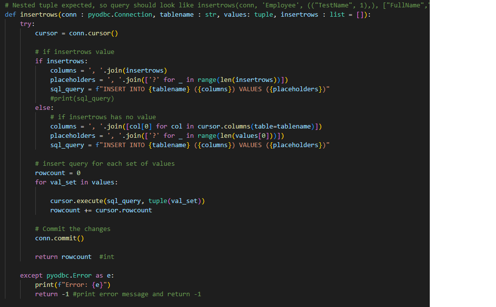
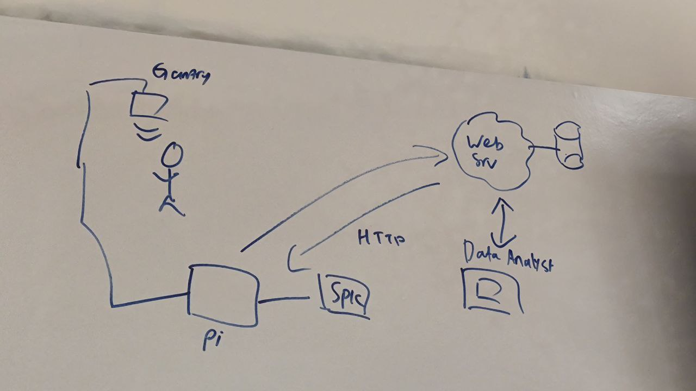
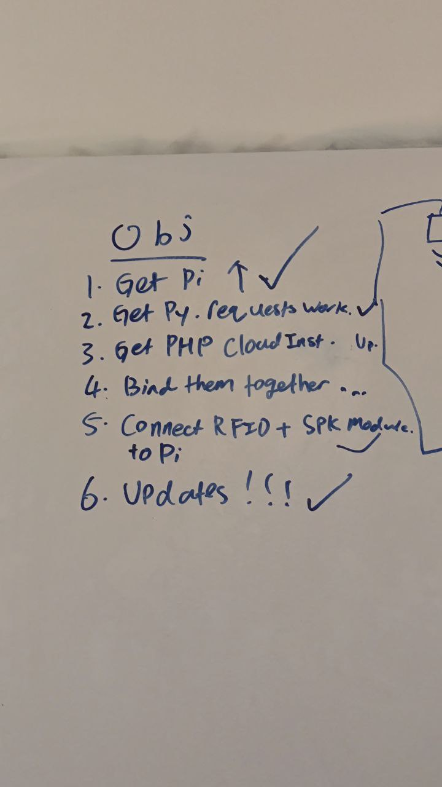

The hackathon is finally here!
For day one of the hackathon, we wrote down our objectives, as seen below, and aimed to complete them by the end of the hackathon.
Our first task was to get the Raspberry Pi up and running, which Zhi Wei took care of.
The second task was to get the Python requests to work, which I was in charge of.
For the third task, we had found out that AIDC wanted to provide cloud databases that required knowledge of PHP, Linux and MySQL.
Since we did not have the cloud database yet, we did not work on third task.
However, I did make a separate file for handling MySQL queries. It was almost the same code as MSSQL, except for using different syntax here and there
The fourth task was to bind the Python/Raspberry Pi to the cloud database, but since we did not have the cloud database, we also did not work on this task.
The final task was to connect the RFID Reader to the speaker module, which Zhi Wei also took care of, since it was related to the Raspberry Pi.
For my task, as aforementioned, I was in charge of handling the manual insertion and deletion functions. Below are some pictures of what I have done.
In the screenshot above, this function does the insertion of data into the database. The parameters are included so that the function can be as dynamic as possible.
This is the employee menu, as seen in the picture. It can handle the insertion, deletion and selection of data.
We also implemented a shift menu where users could perform the same functions but for the shift table instead.
The purpose of these functions and menus is so that it is easy for a user to insert and modify data if needed, without having to use the database.
Currently, this program only runs in the console. Moving forward, we will turn this console app into an app/website, with a better and more user friendly interface.
Below is an image of our solution, drawn in a way that is easy to understand.
To explain, our gantry is a hands free one, which allows employees to clock into work without having to physically interact with the system.
The user will hold an RFID card that has an RFID ID. When the user walks past the gantry, the gantry will detect the employees card.
Once the card is detected, the Raspberry Pi sends data into the Web Server and also retrieves the employee's name and lets them know through a speaker whether they are on time.
A data analyst can retrieve the data from the database to monitor who is early, who is late, and overall use this data to help the business.
By the end of day 1, we completed about half of the tasks, as seen below.
On the second day, we found out that we wouldn't be able to get the cloud database on time, so we had to continue working with MSSQL.
By the end of the second day, most of what we needed to do was solidified, as seen in the picture below.

For our presentation, some feedback we receieved were:
1. Have a video demonstration showcasing what the product does
2. Improve the UI/UX. (Use something other than a python console)
3. Improve the flow of the slides.
For our next presentation, which is the final one, we will definitely use the feedback and tackle our weak points.
Overall, the hackathon was a really fun experience and it was a very memorable experience, being able to work with friends and enjoy activities.
This week, I've learnt how to effectively work with teammates and handle work that is assigned.